\(\newcommand{\AA}{\unicode{x212B}}\)
5.5. Pre-edge peak fitting¶
The “Pre-edge Peak Fit” tab (right-hand of in Figure 5.5.1) provides a
form for fitting pre-edge peaks to line shapes such as Gaussian, Lorentzian,
or Voigt functions. This provides an easy-to-use wrapper around lmfit
and the minimize() function for curve-fitting with the ability to
constrain fitting Parameters.
Fitting of pre-edge peaks with this panel is a two step process.
First, one fits a “baseline” curve to account for the main absorption edge. This baseline is modeled as a Lorentzian curve plus a line which should be a reasonable enough approximation of the main absorption edge (say, \(4p\)) so that its tail represents the background of the main edge underneath the pre-edge peaks.
Fitting the baseline requires identifying energy ranges for both the main spectrum to be fitted and the pre-edge peaks – the part of the spectrum which should be ignored when fitting the baseline. This is illustrated in Figure 5.5.1. Note that there are separate ranges for the “fit range” and the “pre-edge peak” range (illustrated with grey lines and blue circles on the plot). The “pre-edge peak” range should be inside the fit range so that the baseline can fit part of the pre-edge region, at energies below the pre-edge peaks, and part of the main absorption edge region above the pre-edge peaks.
Clicking “Fit baseline” will fit a baseline function and display the plot as shown below. The initial fit may have poorly guessed ranges for the pre-edge peaks and fit range and may require some adjustment. As mentioned above, clicking on the plot will select an energy that can then be transferred to any of the bounds energy using the corresponding pin icon on the form.
{kind=link}
{kind=link}
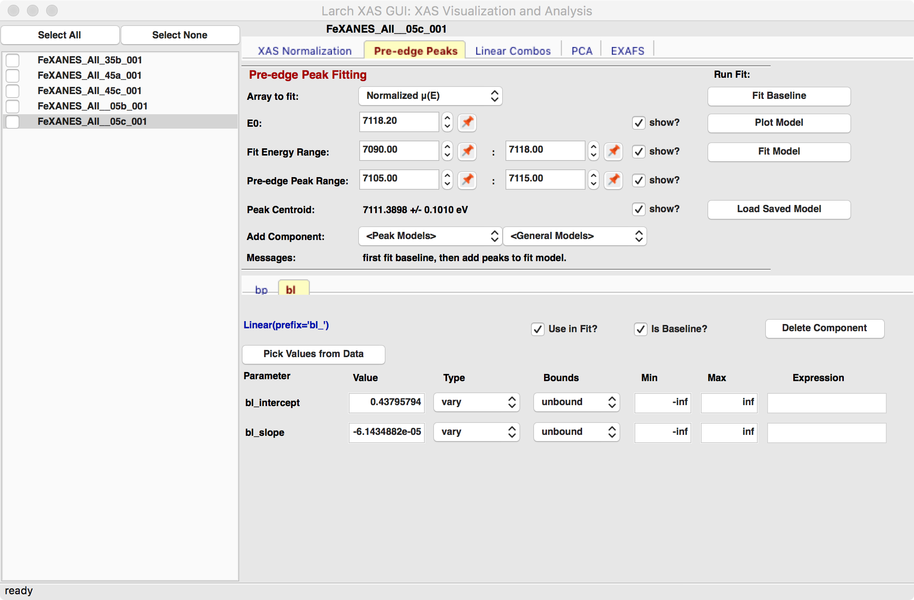
Larix Pre-edge peak Panel{kind=link}
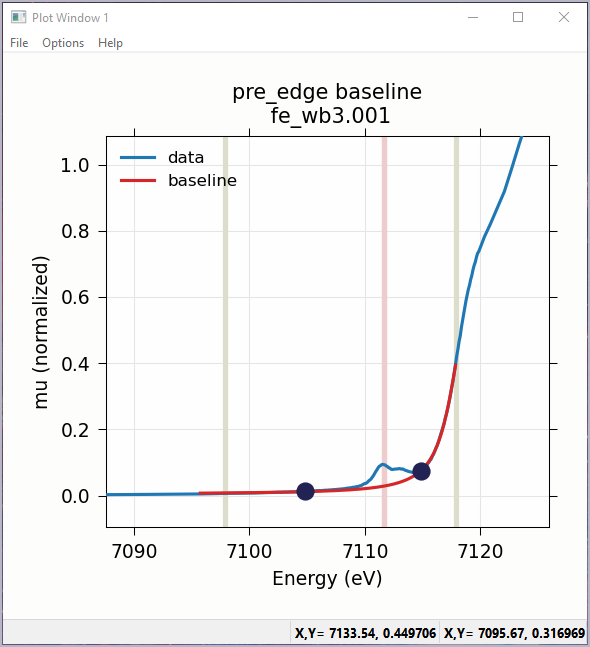
Pre-edge peaks with baselineFigure 5.5.1 Left: The Pre-edge peak Panel, showing how select regions of pre-edge peaks for fitting a baseline. Right: Plot of pre-edge peaks with baseline. The grey vertical lines show the fit range and blue circles show the boundaries of the pre-edge peak range ignored in the baseline fit. The pink line shows the centroid of the pre-edge peaks after removal of the baseline.¶
We will allow the baseline to be refined when fitting the peaks, so it does not need to be modeled perfectly, but it is helpful to get a decent fit to the baseline. Once this baseline is satisfactorily modeled, you can add functions to model the pre-edge peaks themselves. Selecting one of the “Peak Models” (typically Gaussian, Lorentzian, or Voigt) will show a new tab in the “model components area” in the lower part of the form. Since the baseline consists of a Lorentzian curve and a line, there will now be 3 tabs for the 3 components of the pre-edge peak model. The background peak and the background line will have tabs labeled bp_ and bl_, respectively, and the added Gaussian curve will be labeled gauss1_, as shown in Figure 5.5.2, which shows the form with 1 Gaussian peak, and the two-component baseline. You can add more peaks by repeatedly selecting the peak type from the drop-down menu labeled Add Component.
Each of the tab for each functional component of the model will include a table of the Parameters for that peak. For example, a line will have an intercept and a slope parameter, and most peak functions will have an amplitude, center, and sigma parameters (and perhaps more). Each of these parameters will have a name and a value, and also have a Type drop-down list to allow it to vary or stay fixed in the fit. You can also set it to be constrained by a simple mathematical expression of other parameter values. If varied, you can also set bounds on the parameter values by using the Bounds drop-down list (to select positive, negative, or custom) and/or set Min and Max values.
After selecting a functional form for the peak, clicking on the “Pick Values from Data” button, and then clicking two points on the plot near the peak of interest will fill in the form with initial values for the parameters for that peak. This is shown in Figure 5.5.2 which has values filled in from the “two click method” and the initial Gaussian peak. The points you pick do not have to be very accurate, and the initial values selected for the amplitude, center, and sigma parameters can be modified. You can also set bounds on any of these parameters – it is probably a good idea to enforce the amplitude and sigma to be positive, for example. If using multiple peaks, it is often helpful to give realistic energy bounds for the center of each peak, so that the peaks don’t try to exchange.
{kind=link}
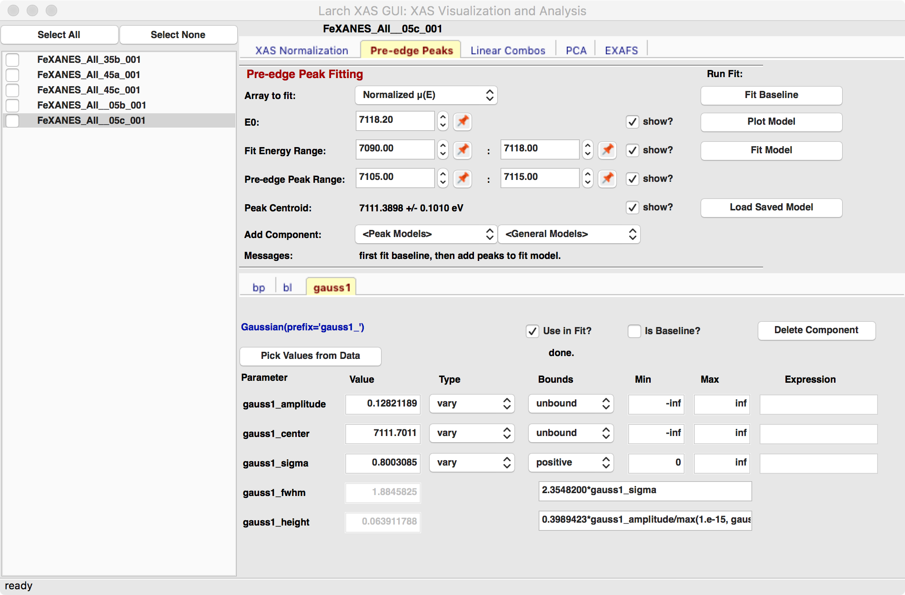
Larix Pre-edge peak Panel{kind=link}
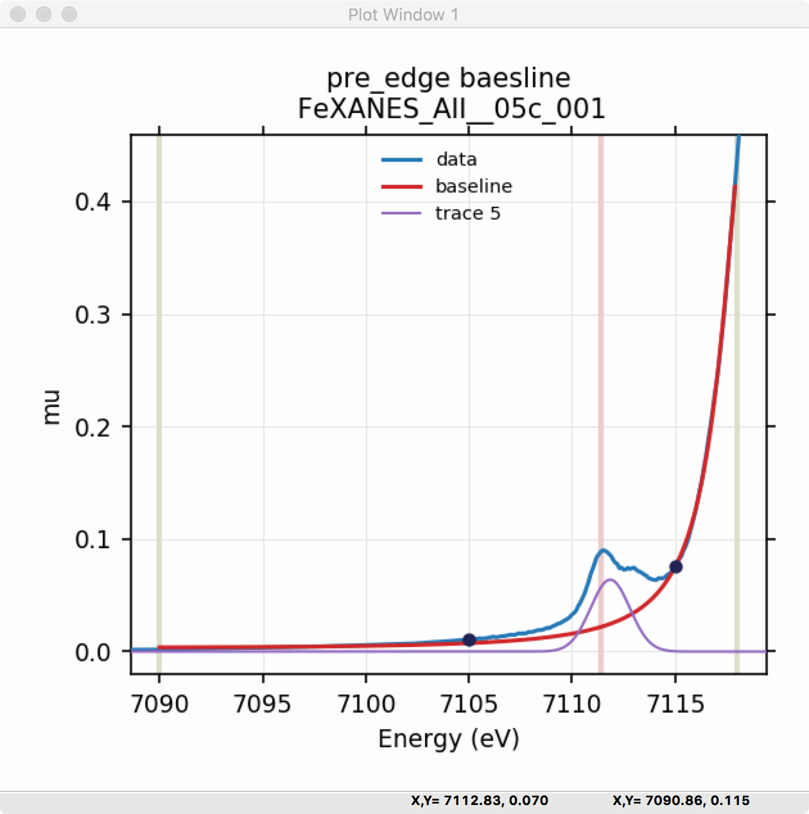
Plot of initial "guessed" Gaussian.Figure 5.5.2 Left: Pre-edge peak Window, showing 3 components of a Gaussian and a baseline that includes a line and Lorentzian. Right: Plot of initial Gaussian guessed from the “two click method” for modeling pre-edge peaks.¶
Once the model function is defined and initial parameters values set, clicking the Fit Model button will perform the fit. This will bring up a Fit Result and an initial plot of the data and fit as shown in Figure 5.5.3.
The Fit Result panel contains goodness-of-fit statistics and parameter values and uncertainties (or standard error). At the top portion of the form, you can save a model to be read in and used later or export the data and fit components to a simple column-based data file. You can also view the fit goodness-of-fit statistics for the fit. There are also some options and a button for the plot of data and fit.
In the lower portion of the form, you can read the values and uncertainties for the fitting parameters and for a number of derived parameters, including fit_centroid that is the (area-weighted) centroid of the functions that comprise the pre-edge peaks (not including the baseline) and the full-width-at-half-maximum and height of each of the peaks (note that amplitude represents the area of the unit-normalized peak and height represents the maximum height for a peak). You can click on the button labeled “Update Model with these Values” to put these best-fit values back into the starting values on the main form. In addition, clicking on any variable parameter to show it correlations with other variables. Note that the baseline parameters are refined (by default) in the fit to the pre-edge peaks.
{kind=link}
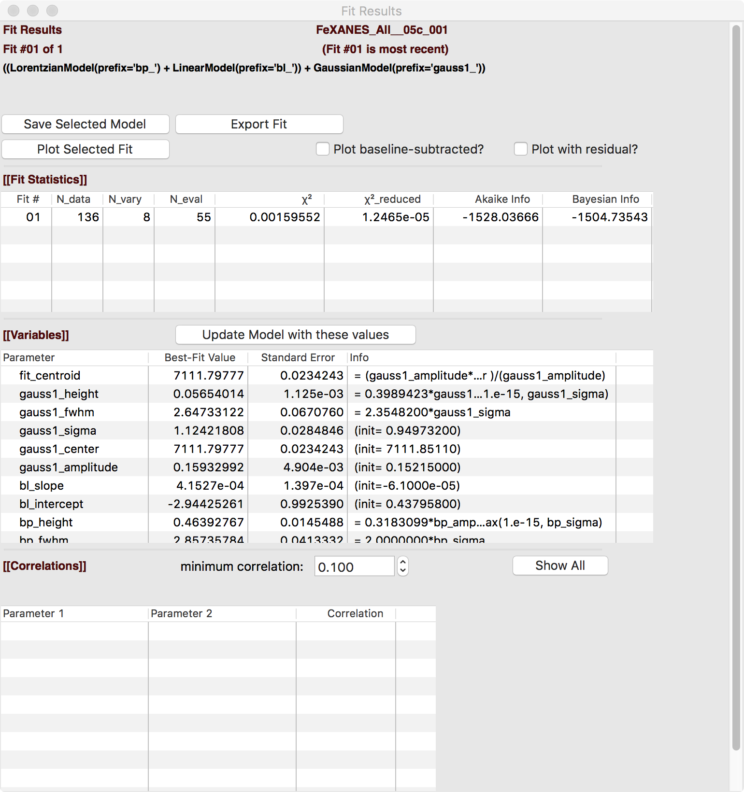
Fit result frame for Pre-edge peak fit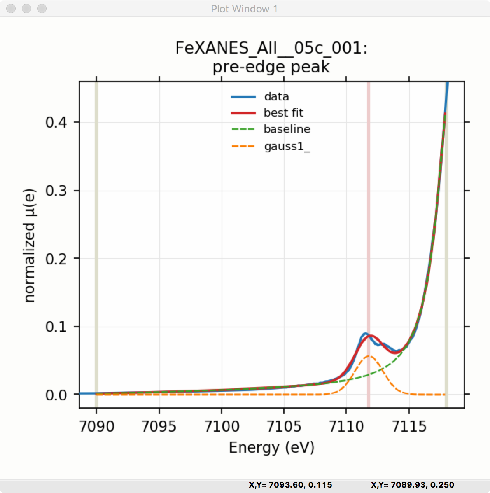
Plot of Pre-edge Peak data and best-fitFigure 5.5.3 Left: Larix Fit result frame for a peak fit with 1 Gaussian. Right: the plot of a fit with 1 Gaussian and baseline.¶
Though the plot of the fit in Figure 5.5.3 does not look too bad, we can see the fit is not perfect. Checking the “Plot with residual?” box we get the plot in Figure 5.5.4 that shows the data and fit and also the residual. From this, we can see systematic oscillations in the fit residual that is well above the noise level and suggests that another peak may be needed to explain this data. This is not too surprising here – there are obviously two peaks in the pre-edge – but it is does illustrate a useful way to determine when it is useful to add more peaks.
{kind=link}
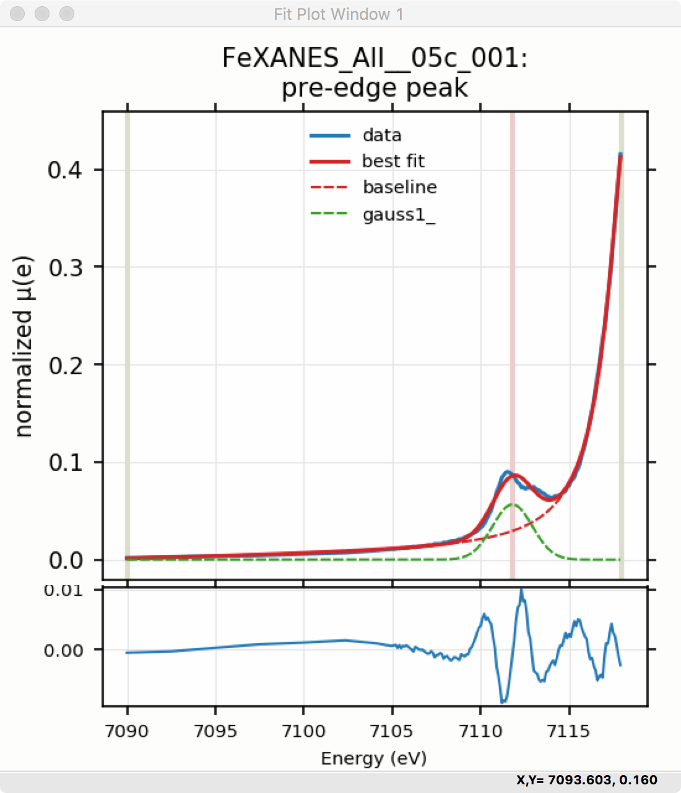
Figure 5.5.4 Pre-edge Peak plot of data, fit and residual.¶
Adding a second Gaussian (and maybe even a third) will greatly help this fit. If we add another Gaussian peak component to the fit model using the drop-down menu of “Add component:”, select initial values for that second Gaussian before, and re-run the fit, we’ll see the Fit Results form and plot as shown in Figure 5.5.5.
{kind=link}
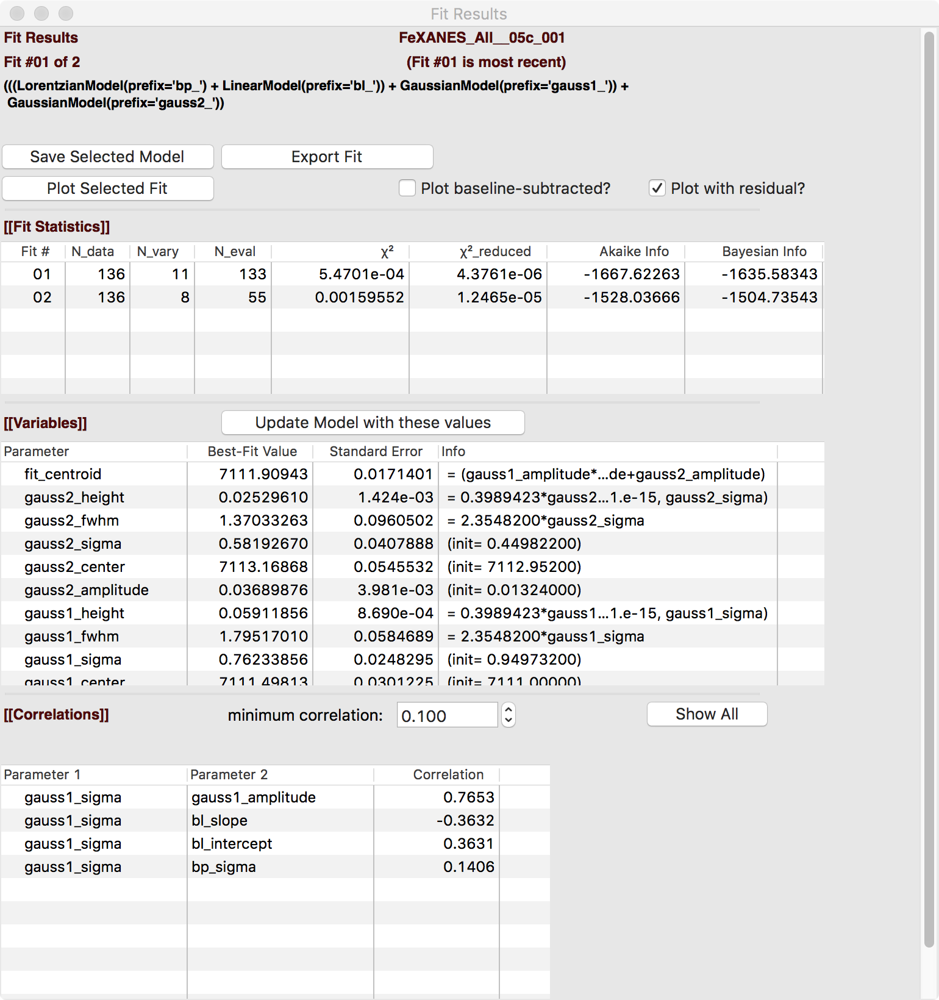
Fit result frame for Pre-edge peak fit{kind=link}
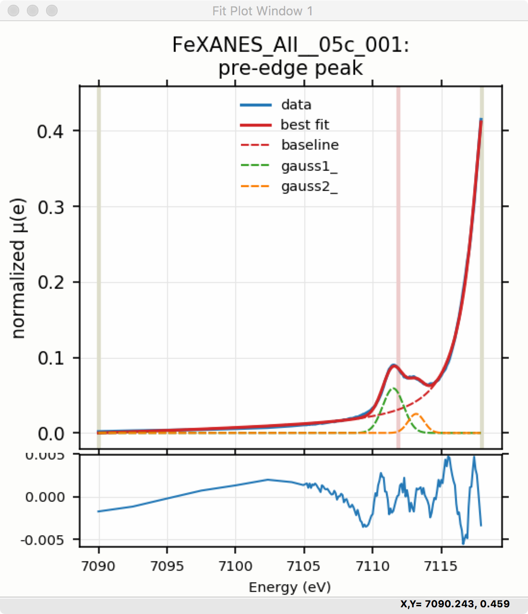
Plot of Pre-edge peak fitFigure 5.5.5 Left: Fit result frame for for a fit with 2 Gaussians. Right: Plot of fit for fit with 2 Gaussians and baseline.¶
As mentioned above, fit results can be saved in two different ways, using the “PreEdge Peaks” menu. First, the model to set up the fit can be saved to a .modl file and then re-read later and used for other fits. This model file can also be read in and used with the lmfit python module for complete scripting control. Secondly, a fit can be exported to an ASCII file that will include the text of the fit report and columns including data, best-fit, and each of the components of the model.
To continue with the analysis of the data in this example, Figure 5.5.5 shows that the fit residual still has significant structure, indicating that either another peak should be included or that the Gaussian peak shape is not a good model for these peaks. In fact, using 2 Voigt functions significantly improves the fit, as shown in Figure 5.5.6, with reduced \(\chi^2\) dropping from 4.4e-6 to 3.2e-6 and similar improvements in the AIC and BIC statistics. To do this, the two Gaussian peaks were deleted and two Voigt peaks added, with initial values selected with the “two click method”.
The fit of the pre-edge peaks is visibly improved but a systematic variation in the residual is still seen at the high energy side of the pre-edge peaks. Adding a third Voigt function at around 7117 eV improves the fit even more as shown in Figure 5.5.6. As shown, the scale of the residual is now 0.001, ten times better than the scale of the fit with 1 peak shown in Figure 5.5.4, and shows much less systematic structure. In addition, all the fit statistics are improved despite now using 14 variables: reduced \(\chi^2\) becomes from 5.1e-7, AIC is -1957 and BIC is -1917.
{kind=link}
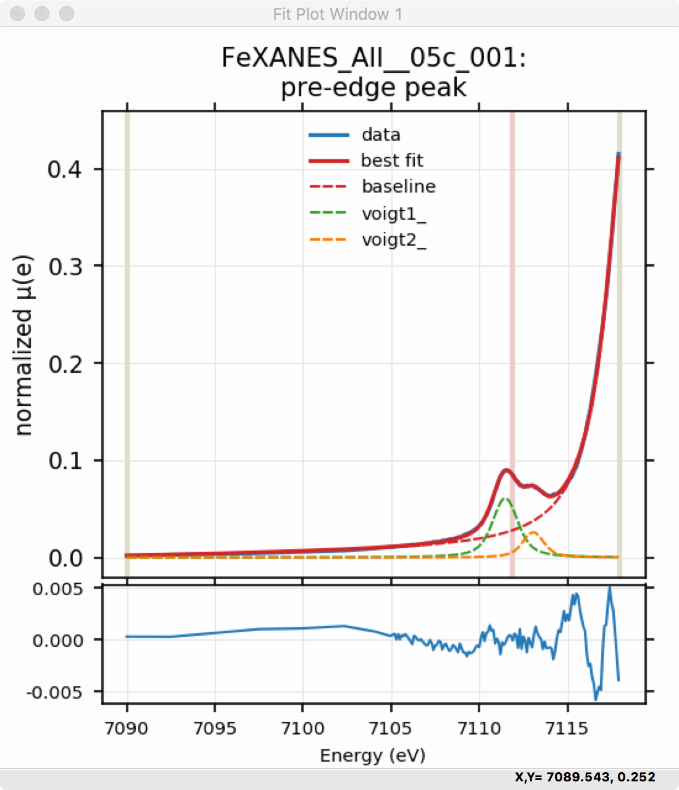
Plot of fit result with 2 Voigt functions.{kind=link}
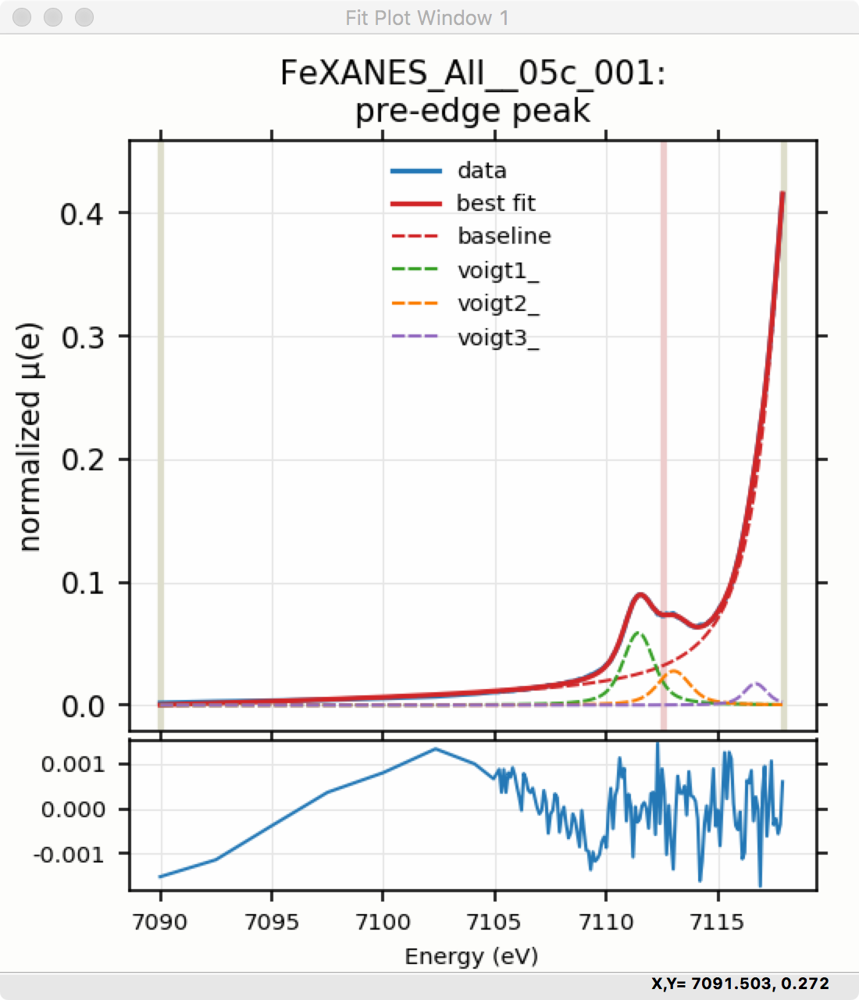
Plot of fit result with 3 Voigt functions.Figure 5.5.6 Left: Plot of data and best-fit for a fit with 2 Voigt functions plus the baseline. Right: Plot of data and best-fit for a fit with 3 Voigt functions plus the baseline.¶